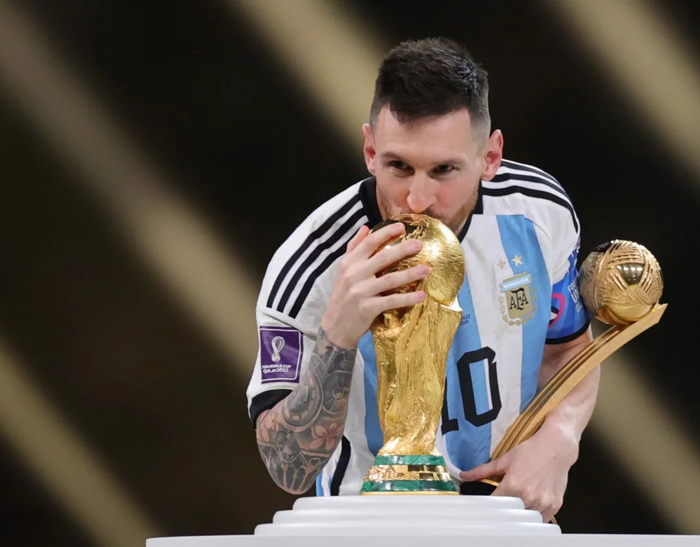

The story of the Greatest player to ever live
Lionel Messi, widely regarded as one of the greatest footballers of all time, has a story that epitomizes perseverance, talent, and determination. Born on June 24, 1987, in Rosario, Argentina, Messi's journey to superstardom began at a young age. Growing up in a modest family, Messi displayed exceptional footballing skills from a very early age. At just 13 years old, he left Argentina to join Barcelona's renowned youth academy, La Masia, after the club offered to pay for his growth hormone deficiency treatment. This decision would prove to be pivotal in shaping his career. By the age of 17, Messi made his first-team debut for Barcelona in 2004, quickly showcasing his extraordinary dribbling ability, vision, and goal-scoring prowess. He became an integral part of Barcelona's dominant team under the management of Pep Guardiola, winning numerous domestic and international titles, including multiple UEFA Champions League trophies. Messi's individual brilliance was evident as he won a record-breaking six Ballon d'Or awards, recognizing him as the world's best player. His playing style, characterized by close control, agility, and precise finishing, mesmerized fans and pundits alike. Despite his immense success at the club level, Messi initially faced challenges on the international stage with the Argentine national team. However, he played a crucial role in leading Argentina to victory in the 2005 FIFA U-20 World Cup and an Olympic gold medal in 2008. In 2014 and 2015, Messi guided Argentina to consecutive Copa America finals but fell short of claiming the title on both occasions. However, his crowning moment came in 2021 when he led Argentina to victory in the Copa America, securing his first major international trophy and fulfilling a lifelong dream. Throughout his illustrious career, Messi's loyalty to Barcelona was unwavering until 2021 when contractual disputes led to his departure from the club. He then joined Paris Saint-Germain (PSG), continuing to showcase his brilliance in a new environment. Beyond his on-field achievements, Messi's humility and dedication have endeared him to millions of fans worldwide. His philanthropic efforts, including supporting children's healthcare and education, further demonstrate his commitment to making a positive impact off the pitch. In summary, Lionel Messi's story is one of talent, resilience, and triumph. From humble beginnings in Rosario to becoming a global icon, Messi's journey embodies the essence of footballing greatness.